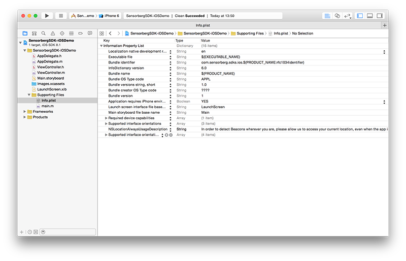

Introduction
This guide describes how to integrate the Sensorberg SDK into your iOS apps. The SDK implements support for accessing beacons that are managed via the Sensorberg Beacon Management Platform.
Installing the Sensorberg SDK via CocoaPods is the prefered and simplest way to get started.
This document contains the following sections:
Requirements
The SDK runs on devices with iOS 7.0 or higher.
Setup CocoaPods
Make sure you have the most recent version of CocoaPods installed on your machine. CocoaPods is built with Ruby and is installable with the default Ruby available on OS X. You can install it via:
$ sudo gem install cocoapodsIf you haven’t created a
Podfilefor your project, yet, please go to your project’s root folder and run:$ pod initAdd the following line to your
Podfile:pod "SensorbergSDK", "~> 0.7.9"Now you can install the dependencies in your project:
$ pod install
Modify Code
- Open your
AppDelegate.hfile. Add the following line at the top of the file below your own #import statements:
#import <SensorbergSDK/SensorbergSDK.h>Modify the AppDelegate to also conform to the
SBSDKManagerDelegateprotocol.@interface AppDelegate : UIResponder <UIApplicationDelegate, SBSDKManagerDelegate>Add a property to the AppDelegate interface to be able to access an
SBSDKManagerobject.@property (nonatomic, strong) SBSDKManager *beaconManager;Open your
AppDelegate.mfile.Search for the method
application:didFinishLaunchingWithOptions:Add the following lines to request permission to display notifications on iOS 8:
#ifdef __IPHONE_8_0 if ([application respondsToSelector:@selector(registerUserNotificationSettings:)]) { UIUserNotificationSettings *notificationSettings = [UIUserNotificationSettings settingsForTypes:UIUserNotificationTypeSound|UIUserNotificationTypeAlert categories:nil]; [application registerUserNotificationSettings:notificationSettings]; } #endifAdd the following lines to bootstrap the Sensorberg SDK:
NSError *connectionError; self.beaconManager = [[SBSDKManager alloc] initWithDelegate:self]; [self.beaconManager requestAuthorization]; [self.beaconManager connectToBeaconManagementPlatformUsingApiKey:@"<API-KEY>" error:&connectionError]; if (!connectionError) { [self.beaconManager startMonitoringBeacons]; }Replace
<API-KEY>with the API key associated with your app. If you don’t know what the API key is or how to find it, please read this how-to.Open your
Info.plistand add a new key namedNSLocationAlwaysUsageDescriptionwith a meaningful description, why your application is requesting full access to the Location Services, i.e.:In order to detect Beacons wherever you are, please allow us to access your current location, even when the app is in the background.